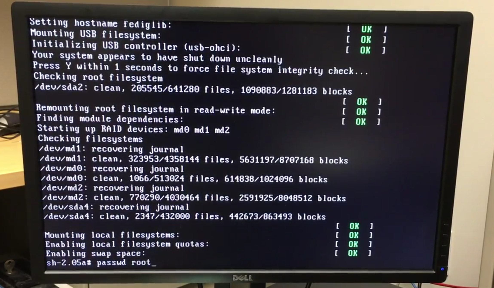
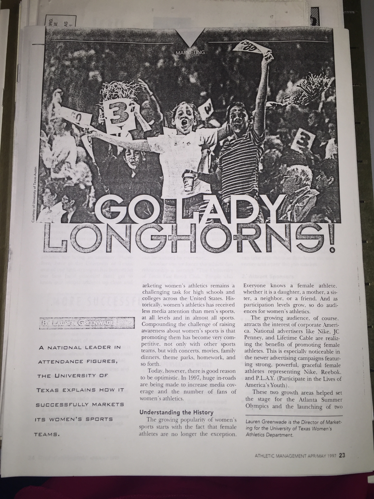
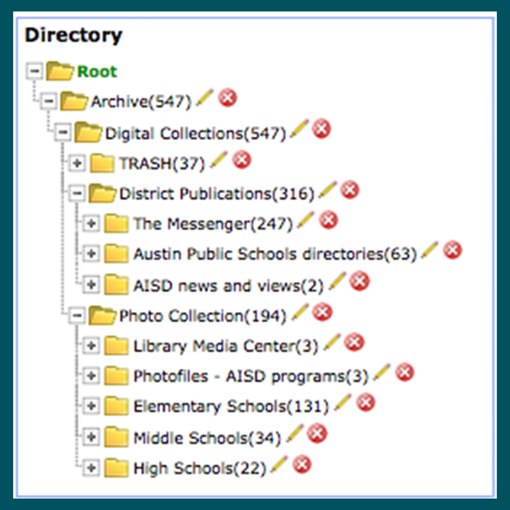
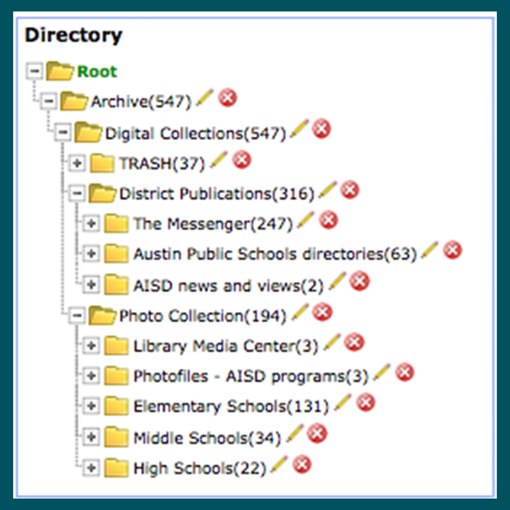

Spring 2016Digital archiving and archaeology project centered on a legacy (circa 2001) server;
led research and experiments; helped draft recommendations for future infrastructure procedures; presented
a digital poster and hands-on technology demonstration; project documentation viewable here.
|
 April 2016
April 2016As part of the UT Digital Preservation Symposium,
I presented a lightning talk with slides, aimed at the digital asset management and preservation community
demonstrating use cases and commands for using the DSpace batch uploading utility at the command line. Using this utility requires not just access to the server, but root, something to consider.
|
 Spring 2016
Spring 2016Coordinated with group members for installation, testing, and use prior to class
presentation; created video walkthroughs and step-by-step exercises for an introductory workshop on BitCurator for archives, including installation scenarios, use cases, and hands-on exercises.
|

Fall 2015Collaborated with a group in processing and arranging approximately 10 cubic feet of archival material,
including appraisal report and processing plan, EAD finding aid, and physical arrangement. For the H.J. Lutcher Stark Center.
Finding aid available via Texas Archival Resources Online.
|

 
